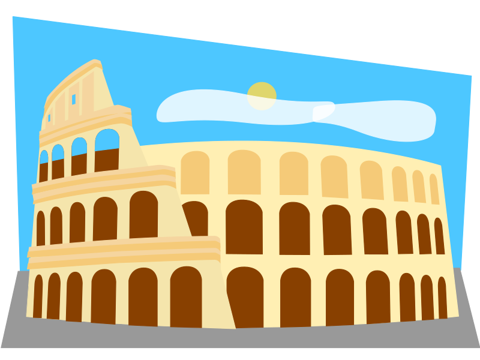
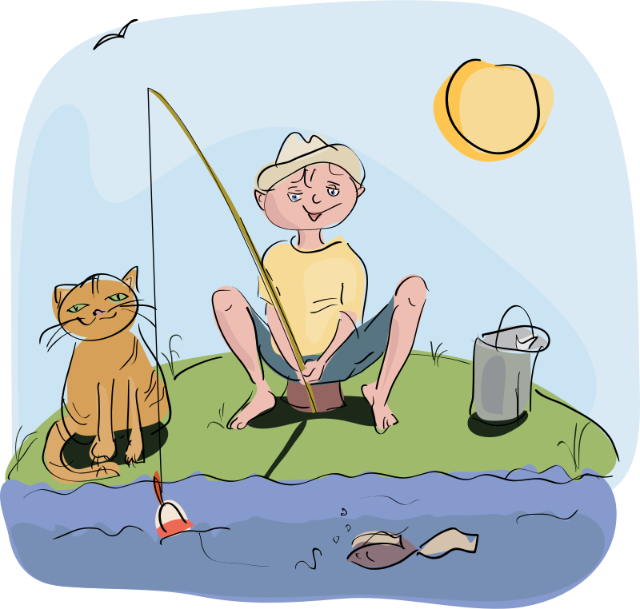
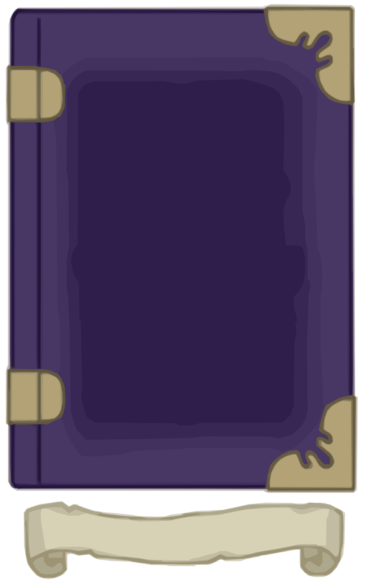

| 1 2 3 4 5 6 7 8 9 10 11 12 13 14 15 16 17 18 19 20 21 22 23 24 25 26 27 28 29 30 31 32 33 34 35 36 37 38 39 40 41 42 43 44 45 46 47 48 49 |
| 14:57 | SCRIPT |  Help text should adapt now |
| 14:30 | SCRIPT | Ability detection on the card guage |
| 13:59 | C# |  I may later do some experiments in C# as I think I may have found a solution for the UniCode issue I am suffering from |
| 13:58 | FIXED |  This should also stop the game from crashing whenever Ryanna does a special attack while in Stopcontact mode |
| 13:57 | FIXED | And some issues brought by the status changes |
| 13:56 | STATUSCHANGE | Paralysis |
| 13:19 | STATUS |   My next concerns will be the paralysis status and the extra cards mechanism.... |
| 13:19 | JUDGMENT |  It get get bugged, but for my current concerns this will do very very well! |
| 13:15 | TEST |  Now I need to know if my savegame got bugged in the process, as that is possible... |
| 13:14 | FIXED | Blockmap issues due to miscoordination of area #003 |
| 13:09 | ITEM |  Vitamin |
| 13:07 | CONFIRMED |  Crack works |
| 12:59 | FIXED | Missing gauntlet spot |
| 12:52 | FIXED | Directory error |
| 12:43 | NOTE |  of course you realize it's completely demented to go through this entire devlog and fix them all.... So not gonna do that! |
| 12:43 | FIXED | Ryanna auto-prefix |
| 12:40 | FIXED | And that should fix that crash |
| 12:40 | LINK |  Done now anyway |
| 12:40 | STUPIDITY |  Forgot to link the arena to the dungeon |
| 12:24 | MAP |  Area #003 |
| 11:31 | JUDGMENT | THAT looks MUCH better! |
| 11:29 | GO |  I made a small change to Ryanna. The way it showed the time used to build a Ryanna project bothered me with that many decimals shown for seconds.... |
| 11:23 | ARENA | Stone Tunnel |
| 10:14 | MAP | Foes set in tunnel |
| 10:13 | FOE | Ninja |
| 10:13 | FOE | Aqua Goblin |
| 10:13 | ABILITY |  Shuriken |
| 10:13 | ABILITY | Aqua Strike |
| 0:58 | BACKUP |  Running once more! |
| 0:52 | MAP | Made all objects move a little more South, in order to satisfy the scrolling routine |
| 0:47 | STATUS | Approx 10 more days before my internet troubles are over! |
| 0:41 | MAP | Area #002 |
| 0:40 | TUTORIAL |  Remark about the big gap |
| 0:23 | CONFIRMED | It works for at least catching and missing.... It should work for monster catches as well, but I cannot check that yet.... |
| 0:18 | FIXED | "nil" |
| 0:16 | GITHUB |  This measure was issued on GitHub, but I don't remember the number, so I'll have to close that issue manually.... |
| 0:14 | NOTE | they should reappear after Ryanna caught or missed something... |
| 0:14 | DONE |  The "Slave" actors will now be hidden when fishing as they only distract. |
| 0:10 | LUA |  IDE refresh |
| 0:09 | STATUS | When it comes to the Devlog tool, I'm nearly there... The only reason why the BlitzMax tool has not yet been put in my graveyard list, is because I require the internet for that! |
| - = 29 Nov 2018 = - |
| 22:37 | TODO |  I must note that editing and deleting will not really change or delete, but rather create a new record and only the reference is being changed. To prevent the content file from getting too large I'll have to set up a pack routine |
| 22:36 | PHANTASAR |  I could get an extra chapter done while I was ill, but I hope it didn't suffer because of that. |
| 22:36 | BACKUP | Running |
| 22:33 | FIXED | And I've fixed the devlog with it... It's clear that UNICODE does not really work well in C# either.... |
| 22:30 | C# | I've set up the Edit feature |
| 22:07 | CONFIRMED | Yup it works |
| 22:06 | C# | The "Edit" command works in the Devlog now |
| 21:58 | C# | I need to see why the C# logo is not done the way it should |
| 21:00 | TODO | As my sickness really wore me out, I will take a break now... I might be back soon to do some things in this very DevLog tool |
| 20:58 | DONE | I could finally eat and I've done so, and I feel a bit better... Only a pity the night has already arrived before that happy fact came to happen, eh? |
| 20:57 | GITHUB | I did update all commits, but I cannot yet push them |
| 20:55 | NOTE | That is of no consequence for the short term, my prime focus will now be the tunnel itself |
| 20:55 | FAILURE |  Just my luck the monster catch didn't show up again. |
| 20:38 | TEST | And let's test this again! |
| 20:38 | GENERATION |  New font generated |
| 20:38 | MYSTERY |  But I wonder why i needed it.... |
| 20:38 | FONT |  underscore added |
| 20:27 | FIXED | The .lua.lua export from MyData should be fixed for fishing spots now... |
| 20:26 | FIXED | Did I fix it now? |
| 20:15 | SCRIPT | Adapted |
| 20:14 | DATABASE |  And all database entries updated |
| 20:13 | DATABASE | I've adapte the database for that! |
| 20:13 | ARENA | A special arena for fishing spots, but it can be changed. ;) |
| 20:04 | STUPIDITY | Haha, I didn't yet set an arena for the encounters in this place.... Silly me |
| 20:01 | PLAN |  The best place for a fish bestiary is most likely the sign near all fishing spots, however I need to see if that is possible considering the way it was scripted... It was too long ago since I touched that sign last, you see... |
| 20:00 | FIXED | "nil" |
| 19:54 | SCRIPT | I've scripted out the possibility to encounter a monster while fishing |
| 18:06 | CONFIRMED | The gate appears towork |
| 17:56 | SCRIPT | Barrier should now work if you got the key! |
| 17:54 | SCENARIO |  Door at the entrance. |
| 17:49 | LICENSE |   License text set |
| 17:48 | MAPSCRIPT | Created for The Primos Tunnel |
| 17:48 | SITE |  Added tag MAPSCRIPT |
| 14:51 | FIXED | At least the fishing spot works now. |
| 14:50 | MEDICAL |  I feel sick! |
| 11:57 | BUG |  Error in exporting Fish Spots and Fish database |
| 11:50 | FISHING | Primos Tunnel Entrance Spot |
| 11:47 | LINK |  Linked |
| 11:44 | FISH |  moonfish |
| 11:44 | FISH | Rainbowtrout |
| - = 28 Nov 2018 = - |
| 20:12 | STATUS | Calling it a day! |
| 20:12 | BACKUP |  Running |
| 20:12 | FIXED | Alright Now stuff works (Not the notes, other stuff that was really buggy, as the notes below are the result of not yet implemented features |
| 19:55 | NOTE |  And the fishing spot will (for now) crash the game! |
| 19:55 | NOTE | No matter if the key is present or not, the door will not yet operate |
| 19:55 | MAP | Entrance layer Primos tunnel |
| 18:18 | FIXED | Directory error! |
| 17:51 | CYNTHIA |  Log updated |
| 17:38 | CYNTHIA | I know I said I would focus on Cynthia Johnson after the Black Tower was completed, however I also said that I would only do this when the internet was operative on me again (as otherwise I cannot test Anna properly) so that must wait |
| 17:36 | JCR6 |  re-packaging music resource |
| 17:35 | MUSIC |  Dungeon1 by J.W.H. Broeders will be used for the Primos Tunnel. Without the internet (or with internet via a cell phone spot which is too expensive to download music from) my options are limited, sorry! |
| 17:27 | ART |  Textures for the Primos tunnel |
| 17:19 | NOTE | If you already have a savegame past that point you won't see this happening. |
| 17:18 | LINK | Linked to getting the Primos key there. |
| 17:18 | SCENARIO | WMCHAT set for leaving the black tower |
| 12:23 | CONFIRMED | And I did see that the representative of Anna's Temple didn't appear in town, and that is a good thing since that required the internet to be on... So maybe I should thank a certain ISP for ruining my internet like that (although there were better ways to confirm this, I tell ya). |
| 12:22 | CHECKED |  Some city stuff underwent some extra checkups |
| 12:22 | SCENARIO | I've fixed this |
| 11:59 | SCENARIO | Set up the record, but it can't yet prevent all crashes, but at least I can now investigate further.... |
| 11:57 | LUA | IDE Refresh |
| 11:53 | MYSTERY | No clue at all how it could disappear, but all I can do is rewrite it! |
| 11:53 | CHECKED | Oddly enough the scenario editor doesn't have this record either.... |
| 11:52 | JCR6 | The JCR6 list output confirms the non-existence of WMCHAT |
| 11:50 | RESULT | !!FATAL ERROR!!!
Error
jcr6.lua:77: Entry SCENARIO/EN/WMCHAT not found
Traceback
[string "Script/Subs/Error.lua"]:59: in function <[string "Script/Subs/Error.lua"]:24>
[C]: in function 'assert'
jcr6.lua:77: in function 'jassert'
jcr6.lua:259: in function 'JCR_Lines'
[string "Libs/Scenario.rel/Scenario.lua"]:58: in function 'LoadScenario'
[string "script/flows/worldmap.lua"]:234: in function 'GALE_OnLoad'
[string "script/flows/worldmap.lua"]:236: in function 'PreProcess'
use.lua:43: in function 'Use'
[string "Script/Subs/headers.h.rel/worldmap.h.lua"]:38: in function <[string "Script/Subs/headers.h.rel/worldmap.h.lua"]:37>
[string "Script/Flows/field.rel/zone action.lua"]:111: in function 'ZA_Check'
[string "Script/Flows/field.rel/field.lua"]:491: in function 'odraw'
[string "Libs/killcallback.rel/kcb.lua"]:77: in function 'draw'
[C]: in function 'xpcall'
This error is pretty odd, as that entry SHOULD exist.... |
| 11:44 | INVESTIGATION |  I'll try to investigate the WMCHAT bug though, as this was kinda odd... |
| 11:42 | INVESTIGATION | My time is limited today, most of all due to my internet crisis, however today I'll be speaking with professionals regarding this matter.... |
| - = 27 Nov 2018 = - |
| 23:49 | FIXED | Speaking of grammar... a typo in the DevLog output was fixed. |
| 23:48 | BADREMARK | Yeah, I wonder myself if the grammer of that one was correct |
| 23:48 | STATUS | Well at least some quickly required things have been taken care of, I guess... |
| 23:39 | FIXED | And now it's truly fixed, as it was not exactly working the way it should |
| 23:33 | FIXED | |
| 23:29 | OFFTOPIC |  I need to thank my good friend (who I'll keep anonymous) for telling me about using a cell phone as a wi-fi spot (hey, I don't know everything). |
| 22:55 | UNIX |  I've changed a few things in order to prevent this from affecting my future pushes until the internet's been fixed. |
| 22:53 | SYSTEM |  My new ISP sent me a letter I received today. It told me what to expect the upcoming days.... Yes, I'll still be without the internet for awhile, but at least I now know what's gonna happen and how long I got to suffer. |
| 22:52 | GITHUB | There are a few conflicts between the two file systems, due to C# forcing me to use a Unix device (yeah, pretty odd that to code programs for a MicroSoft system I need to put my source codes on a Unix device. The logic's beyond me, as well). |
| 19:26 | BUG | |
| 19:25 | STATUS | My internet shit is for most part up-to-date |
| 12:39 | STATUS | See ya later, folks! |
| 12:39 | ANNA | Normally I want to see if I can update Anna's temple every two, or so, dungeons, but as I require the internet for that, bad luck! |
| 12:38 | PLAN | I do intend to create an achievement for reaching level #100 of the black tower, however due to the lack of internet right now, this has to wait.... I hope I don't forget to put it onto my issue tracker when I'm on the net! |
| 12:38 | STATUS | I will also see if I have the oppertunity to fix my broken github repositories in the process.... |
| 12:37 | STATUS | For the short term I have to- Fix the WMCHAT issue
- And make sure the key appears in the inventory in the "Key Items" tab.
- And make sure to start on the Primos tunnel to make the key running there. Will save me a lot of headaches when I put emphasis on that one!
|
| 12:35 | BACKUP | I've launched the backup tool... As soon as the backup is done, I'll break up and go to the machines that have to provide me with internet! |
| 12:34 | STATUS | For now I'll have to quit this session. This will be one of my few opportunities to access the internet, and I don't intend to waste it! |
| 12:33 | BUG | The game also crashed on me when leaving the Black Tower do to not being able to find WMCHAT... This should not be possible, but stranger things have happened along the way. |
| 12:32 | STATUS | I will have to sort out later why the key does not appear on the inventory screen. |
| 12:32 | CONCLUSION | My investigation does at least show that the item itself has been added to the inventory. That will do ... for now! |
| 12:27 | INVESTIGATION | Let's find out WHY! |
| 12:25 | BUG | The key does not appear in the inventory |
| 12:16 | TEST | Time to put it all to the test! |
| 12:15 | LINK | And that links everything together! |
| 12:15 | SCRIPT | Key script |
| 12:15 | FIXED | Barrier wrongly tagged |
| 12:13 | NOTE | Key variable &KEY.TO_PRIMOSTUNNEL. Don't forget ;) |
| 12:10 | TECHNO |  Under the hood key items have no value... They are just added to your inventory and.... that's it! The truth is that a variable will be flagged and that will cause the door to open. You do NOT have to pick the items from your inventory, they will be used automatically when needed. |
| 12:09 | ITEM | Primos Key |
| 12:02 | SCENARIO | Key |
| 11:53 | MAP | And maybe I should note that the Traveler's Medal on Floor #061 is the last one you can obtain in the Black Tower. |
| 11:52 | MAP | Levels #061 till #100 have all been set up, but I will not thoroughly test them unless some bugs are reported on the longer run. |
| 11:20 | CONFIRMED | Fix confirmed |
| 11:11 | TEST | Of course another test is in order |
| 11:10 | FIXED | That issue has been fixed |
| 11:09 | BUG | The boss barrier didn't disappear |
| 10:57 | RYANNA |  Project file updated |
| 10:57 | TEST | Take ONE! |
| 10:56 | SCRIPT | I've set up the script that will force players of the hard mode to face the Giant Eagle (only players of the easy mode may consider it an optional boss, after all,and players of the hard mode can't get the key here as it's located on floor #090 inthe hard mode). |
| 10:53 | LINK | Boss linked to the map script |
| 10:48 | BOSS |  Giant Eagle |
| 10:42 | ABILITY | Dive |
| 10:40 | MAP | I've placed in a zone that will FORCE hard mode players to take this boss on... The zone will not respond to any other difficulty setting (also meaning that players who play the easy mode will be able to skip this boss if they want to reach level #100. That is NOT a bug, I deliberately set it up to make it act that way). |
| 10:38 | LINK | Linked to the boss system (although there's no data yet, the game will crash... for now). |
| 10:38 | MAP | Boss placed into the map |
| 10:35 | ART | Giant Eagle |
| 10:29 | CONFIRMED | It works! Or at least item drops do.... I couldn't yet check the money drops, but I do not expect any trouble there. |
| 10:21 | TEST | Take TWO (I know ONE TAKE was wishful thinking). |
| 10:21 | FIXED | "nil" |
| 10:15 | OFFTOPIC | (I really HOPE this goes will in one take). |
| 10:15 | TEST | Take ONE! |
| 10:12 | OFFTOPIC | (This was actually the same measure as was done in "The Fairy Tale REVAMPED" and "Star Story" (although the latter did it in a long way around through Aurinas but still). |
| 10:11 | NOTE | Please note enemies drop either an item or money, but NEVER both! |
| 10:10 | SCRIPT | Money drops scripted |
| 10:10 | SCRIPT | Item drops from enemies scripted |
| 9:16 | CONCLUSION | It's hard to tell if this works the way it should... At least the game doesn't crash, and the card flow doesn't bug so far either... I will have to see in the future if things are truly working the way it's intended... |
| 9:05 | TEST | Of course, since this is a process concerning multiple parts of the combat engine, this can be a complex operation in which a lot can go wrong, so time to test! |
| 9:05 | SCRIPT | I've set up a script which should not remove the first card right away, but add a "done" tag to it, meaning the card manager should ignore it furhter on, and dispose of it accordingly. This should stop the issues of AI conflicts and playable characters activating when they shouldn't and so on.... |
| 0:00 | STATUS | Calling it a day, see ya! |
| 0:00 | STATUS | My next aim will be the enemy drops and the level #060 boss |
| - = 26 Nov 2018 = - |
| 23:59 | BACKUP | Extra backup |
| 23:59 | TEST | All levels till #060 accounted for.... Should all work! |
| 23:32 | FIXED | Bugged chest |
| 23:12 | NOTE | I also must find out why my Devlog tool keeps throwing these on its console ERROR! Unknown content command tag 101
ERROR! Unknown content command tag 63 |
| 23:11 | NOTE | At least the player shouldn't notice these odd things came around |
| 23:10 | MYSTERY | I wonder how the blockmap generator can come to these odd conclusions :-/ |
| 23:09 | DONE | More "fake fixes" |
| 23:03 | DONE | I refuse to call this a fix (there was no bug in the first place, after all), but I've at least put in some zones that should prevent this from happening. |
| 23:03 | HUH |  The blockmap is not operating the way it sould.... |
| 20:29 | STATUS | Tests will run later! |
| 20:29 | FIXED | Some faulty treasure chests |
| 20:27 | MAP | Level #051 up to #060 completely designed |
| 20:12 | NOTE | It's not unthinkable more enemies could be added to the Black Tower, but it's not yet final. |
| 20:11 | MAP | Added to Black Tower |
| 20:11 | FOE | Wind Elemental |
| 20:11 | ART | Wind Elemental |
| 18:00 | STATUS | Calling it for now! |
| 18:00 | BACKUP | Running! |
| 17:59 | LICENSE | All info up-to-date! |
| 17:57 | JUDGMENT | All is fine! |
| 17:51 | SPELLANI | Phoenix now has sparkle effect |
| 17:49 | NERF |  HP Mountain king brought down (it was expected this would be needed). |
| 17:40 | TEST | Take TWO! |
| 17:40 | FIXED | Just as I thought! ;) |
| 17:39 | BUG | Boss ignores me when I try to activate it. |
| 17:20 | FAILURE | Make, a program that won a prize turned out to gimme an epic fail :P |
| 17:20 | FIXED | Item reference error for three items fixed! |
| 17:05 | FAILURE | A certain internet provider called me.... LOSERS! |
| 17:05 | TEST | Well, all I can do now, is check if it all works.... |
| 17:01 | CONFIG |  Music properly set for the boss fight! |
| 16:58 | COSMETIC |  If the boss' code name (the file name in which it has been added in the JCR6 system) differs from the screen name it can now be added! |
| 16:57 | LINK | Link config written, so the boss will start, but a few things do need to be taken in order. |
| 16:57 | CONFIRMED | JCR6 now confirms it's being included |
| 1 2 3 4 5 6 7 8 9 10 11 12 13 14 15 16 17 18 19 20 21 22 23 24 25 26 27 28 29 30 31 32 33 34 35 36 37 38 39 40 41 42 43 44 45 46 47 48 49 |